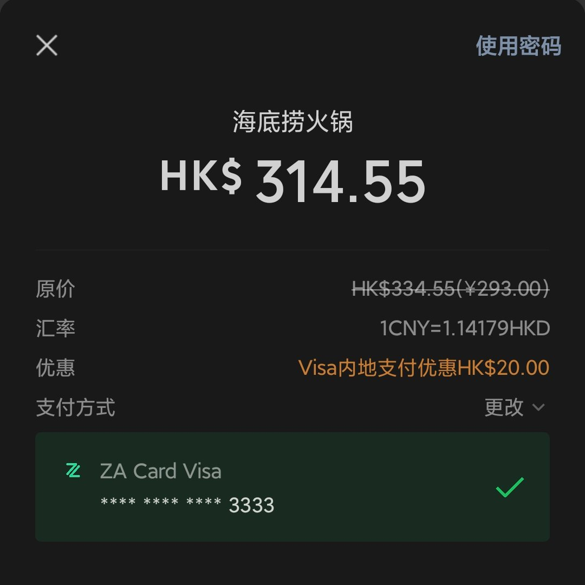
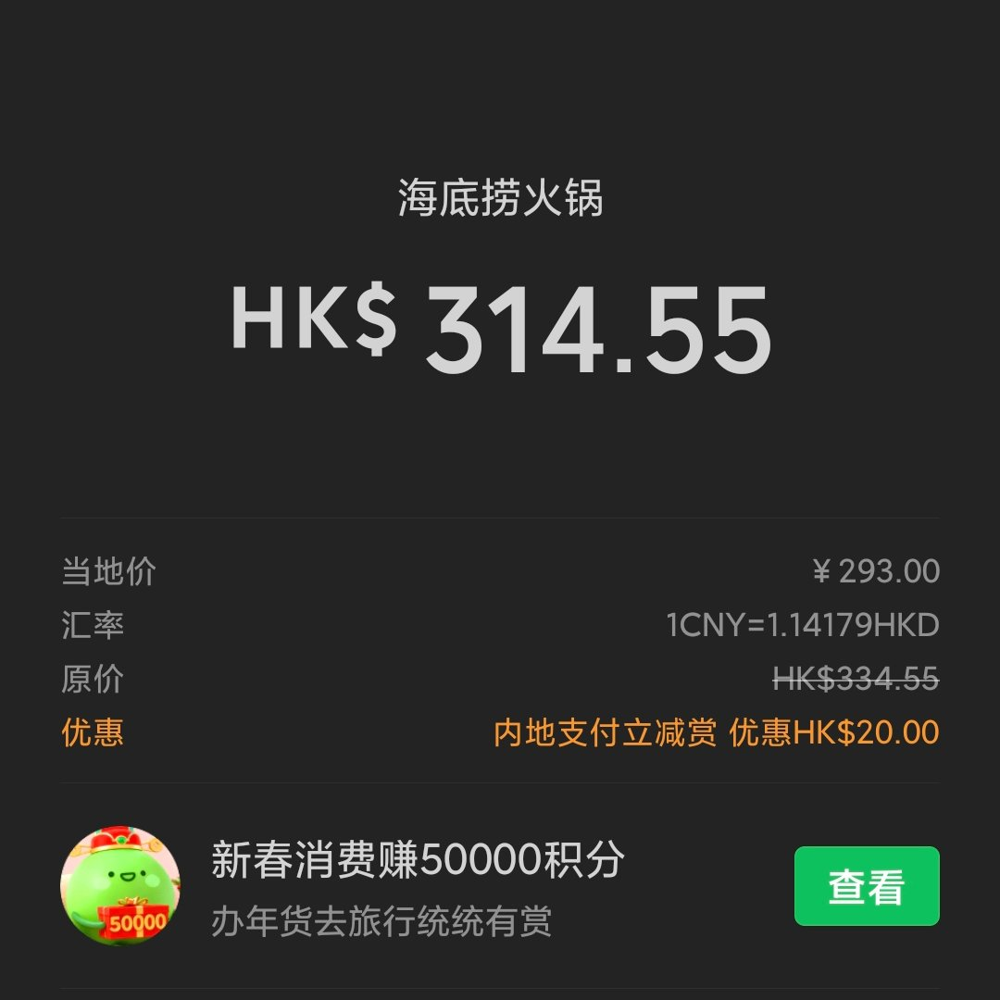
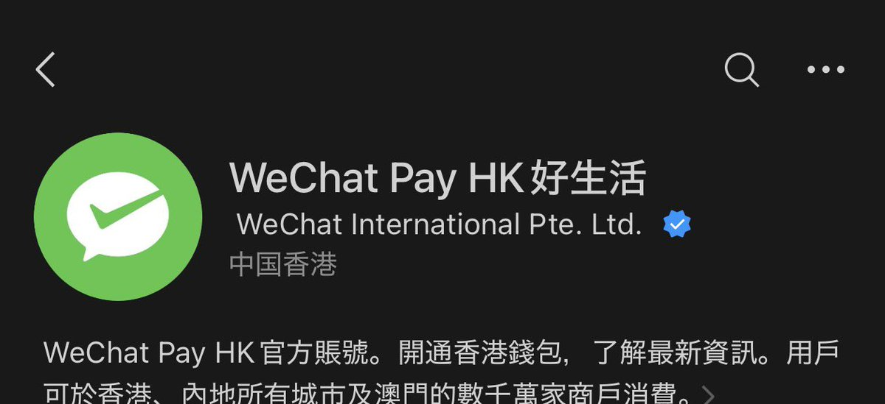

@__Crazy_Kid__ @hualunjiejie @hodehn352185 而且VISA卡走港版微信支付在内地消费，最高40HKD。今晚吃了海底捞也是20HKD的立减，唯独有个年限额很烦，其他都挺不错的（扣的是HKD没有货转




实测海底捞也能用港币付🤗
每单都有20HKD内地支付立减赏（仅限VISA卡）
汇率314.55/293=1.073549488
ZA Coin大概返了280 https://t.co/S3QCvTiMgu
每单都有20HKD内地支付立减赏（仅限VISA卡）
汇率314.55/293=1.073549488
ZA Coin大概返了280 https://t.co/S3QCvTiMgu